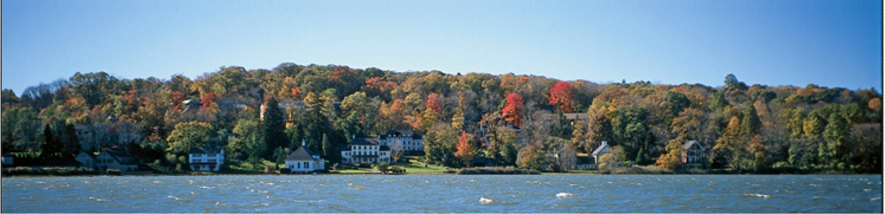

Cold Spring Harbor Laboratory Synthetic Biology Course
Course website here
Bacterial photography in the classroom
Tabor Lab researchers have adapted Jeff Tabor’s pioneering work on bacterial photography into a low-cost, easy-to-use K12 kit enabling students to create their own photographs in the classroom using engineered bacteria.
Bacterial photographs are taken with E. coli which have been genetically engineered to sense red light and respond by producing indigo, the same dye used in blue jeans. When a culture of these E. coli are cast into molten agar and exposed to a red image, they develop a replica of the image, creating a “bacterial photograph” which lasts indefinitely. This highly visual classroom experiment demonstrates to students core biology principles and excites them about cutting edge research and future careers in STEM fields.
We have had great success in distributing this kit to over 500 students during the 2014/15 school year. Unfortunately due to resource constraints we have had to cease distribution to high schools for this school year. However, we are still interested in coordinating with museums and university classes, so if you represent one of those institutions please don't hesitate to contact us at contact@bactograph.org about trying out the experiment. If you are interested in keeping up to date with future developments of this next generation science kit, please send a short email to mailinglist@bactograph.org. Much more information can be found at the website linked below. We are excited to see the impact this experiment can have on the young scientists of tomorrow!


")